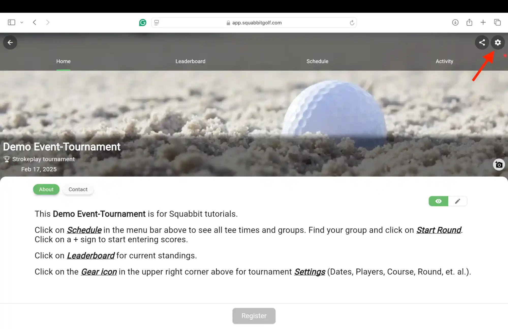
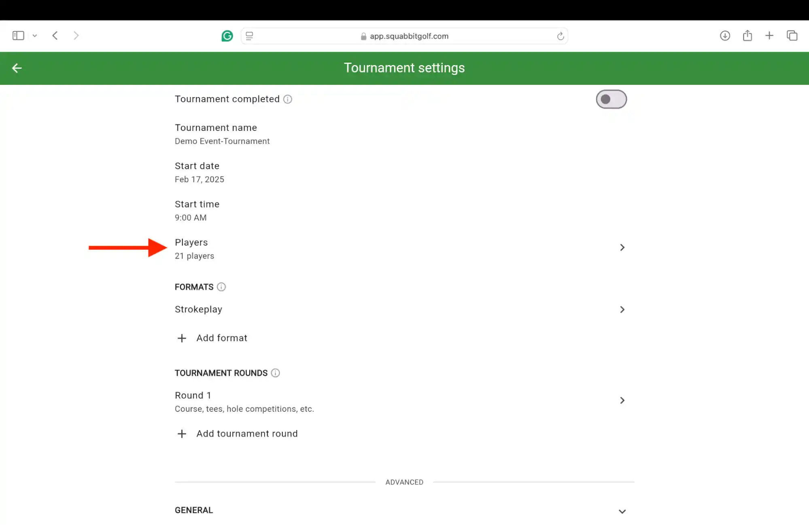
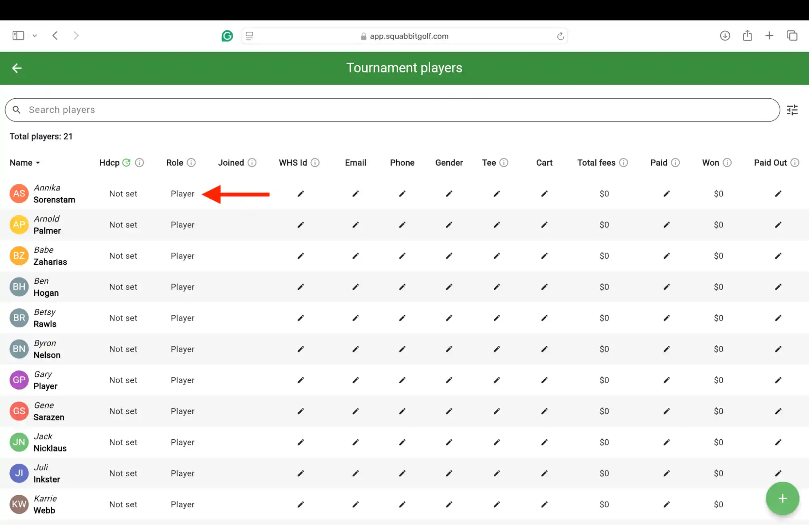
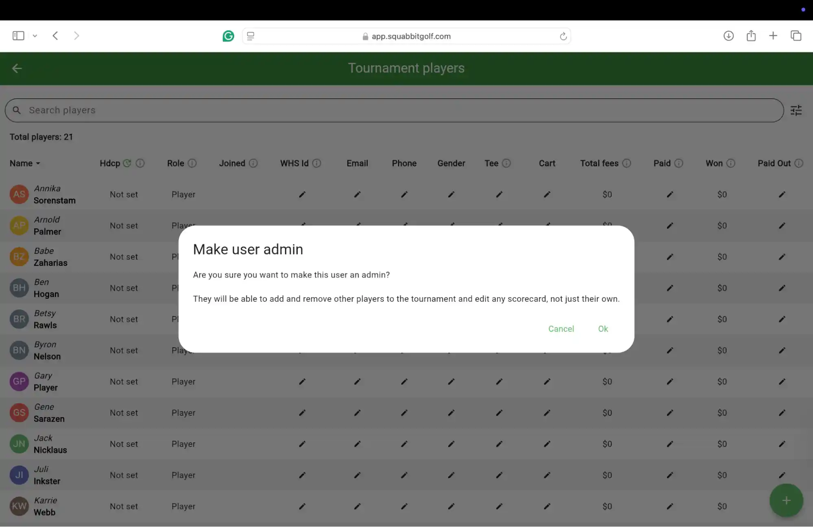
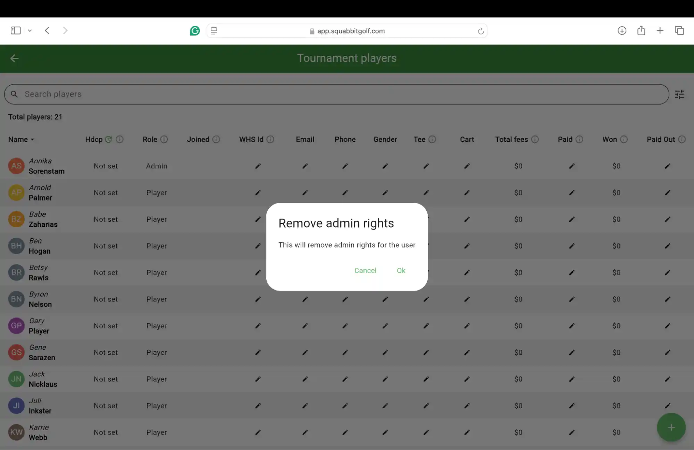

Player Management - Admin Role
This tutorial will cover the procedure to change a “Player” to an “Admin”, and back again. Admins may add or remove players from a tournament-event, league, or club. They may also edit any scorecard, not just their own.
- Access a tournament-event, league, or club and then tap the gear icon in the upper right-hand corner to access the Settings.

- Click anywhere on the line that says Players.

- Find the Role column. Click on Player for the person you would like to make an Admin. Note that you can click on any lower-case i with a circle around it for more information. Click on the pencil icon to edit the information in the other columns.

- You will receive a warning covering what an admin is permitted to do. Click Cancel to quit, or Ok to continue. The role should change from Player to Admin.

- Clicking on Admin will give you the option to remove the admin rights. The person’s role will go back to just Player.

If you have any questions, please click here and scroll to the bottom to contact support.